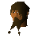
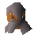

Shilo Village
Town at 2849, 2986 · Karamja
Open on the world map → Open in knowledge graph → Below: Shilo Village (underground)
NPCs
| NPC | Level | Spawns | Notable drops |
|---|---|---|---|
| Jungle spider | 44 | 10 | |
| 32 | 1 | Coins, Snape grass, Limpwurt root, Herb drop table | |
| 5 | 2 | ||
| 3 | 6 | ||
| shop | 1 | ||
| 3 | |||
 Kaleb Paramaya | 1 | ||
| Seravel | 1 | ||
| Yanni Salika | 1 | ||
 Yohnus | 1 |